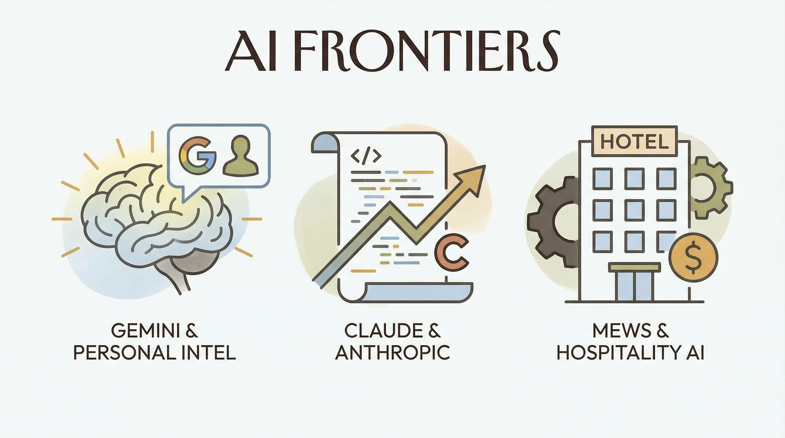

Gemini推出Personal Intelligence，强化AI生成图像能力
两克伴AIGC日报
2026-01-25 星期日

本期关注：AI代码生成领域竞争加剧，Anthropic的Claude Code走红吸引非编码者，OpenAI将发布智能体循环技术的Codex项目挑战对手，同时Gemini强化图像生成能力，Claude Code创造者更宣称AI已编写其100%代码，推动AI工具向更高效、普惠化发展。
📰 行业动态
Anthropic的 Claude Code工具走红，吸引非编码者关注
Mews获得2550万欧元融资，加速酒店业AI和自动化
前谷歌员工开发AI学习应用，旨在教育孩子现代概念
AI实验室面临新考验：是否在努力盈利？
🔥 今日焦点
OpenAI即将发布其备受瞩目的Codex项目，这无疑是对Claude Code的又一挑战。据悉，Codex将采用智能体循环技术，实现更高效、更智能的代码生成。这一技术突破对于AI领域具有重要意义，它不仅将推动代码生成技术的发展，还将对编程教育、软件开发等领域产生深远影响。
智能体循环技术，即通过训练智能体在代码生成过程中不断学习和优化，从而实现代码生成的智能化。这一技术有望解决当前代码生成中存在的诸多问题，如代码质量参差不齐、生成效率低下等。在AI领域，这一技术的突破意味着代码生成将更加高效、准确，为开发者提供更多便利。
Anthropic的Claude Code创造者Boris Cherny宣称，他已经两个月没有手动编写代码了。在30天内提交了259个Pull Request（PR）。在Reddit上，用户u/jpcaparas对此表示怀疑，并观看了完整访谈并核实了实际情况。访谈中，Boris透露了他的工作流程：首先进入计划模式（不断迭代直到计划正确），然后自动接受。他认为：“一旦计划正确，代码就会是好的。”这引发了人们的不安：每天谁在审查10多个PR？该消息对AI领域具有重要意义，它展示了AI在软件开发中的应用潜力，同时也引发了关于AI在代码审查和项目管理中角色的讨论。
---
近日，Reddit用户u/Merstin分享了其家庭升级显卡后，利用闲置部件搭建的本地AI设备的使用体验。该设备采用i7 14700K处理器、64GB DDR5内存和双RTX 3090显卡，旨在实现隐私保护、智能家居集成以及“vibe coding”等目标。然而，在实际使用过程中，该设备高昂的电费成为了其价值的制约因素。据估算，若频繁使用，该设备每日电费可能高达5美元。与订阅云服务相比，本地AI设备的成本效益似乎并不明显。这一案例引发了业界对本地AI设备成本效益的讨论，对AI领域的发展产生了重要影响。
📚 深度长文
本文由Jasmine Sun撰写，深入探讨了人们对于软件问题的认知误区。文章指出，大多数人面对问题时，往往不会意识到这些问题可以通过软件解决方案来解决。作者以“如果你告诉朋友他们现在可以立即创建任何应用程序，他们可能会说‘酷！现在我需要想一个想法。’然后他们会忘记这件事，永远不会去构建任何东西。”为例，揭示了人们对于软件创新认知的局限性。
文章进一步分析了程序员与普通人的思维差异。程序员习惯于将所有问题视为软件问题，并倾向于自动化重复性任务。然而，这种思维方式却让普通人忽视了软件解决方案的可能性。作者以“重命名上周所有IMG_*.jpg文件为hawaii2025_*.jpg”为例，说明了程序员如何通过脚本自动化解决这一问题，而普通人则可能通过繁琐的手动操作来完成。
本文探讨了设计流程的局限性，作者Jenny Wen，Anthropic设计负责人兼前Figma设计总监，在柏林Hatch Conference上发表了引人深思的演讲。她认为，传统的用户研究、角色扮演、用户旅程和线框图等设计流程，在当今“人人皆可创造”的世界中已显得过时。
Wen提出，在当今时代，选择和筛选所创造内容的能力比流程本身更为重要。她主张设计师应转向原型设计，而AI技术的进步使得原型设计更加便捷和高效。
LeCun创业公司近日宣布其核心发展方向，估值高达35亿美元，此举标志着对Next-token范式的重大“叛变”。文章深入剖析了这一变革背后的原因和影响，揭示了LeCun团队在人工智能领域的独特见解和创新实践。
核心观点在于，LeCun团队通过其创新技术，挑战了传统的Next-token范式，提出了一种全新的数据处理和模型构建方法。这一方法不仅提高了数据处理效率，还显著提升了模型的性能和泛化能力。
本文深入探讨了神经网络的“可重编程性”这一前沿话题。文章指出，神经网络并非一成不变，而是可以通过重新编程实现多样化的功能。作者通过详实的实验数据和理论分析，揭示了神经网络可重编程性的关键论据，包括网络结构的动态调整、参数的灵活配置以及学习算法的优化等。文章不仅对神经网络的可重编程性进行了全面阐述，还探讨了其潜在的应用前景和挑战。对于AI从业者而言，本文提供了宝贵的理论指导和实践参考，有助于推动神经网络技术的发展和应用。阅读本文，将有助于读者深入了解神经网络的可重编程性，拓展视野，提升专业素养。
🛠️ 产品推荐
Show HN: I embedded Claude inside a running Node app是一款创新性的AI产品，核心功能是将AI嵌入运行时环境。通过集成Claude Agent SDK，该产品实现了“Claude Code as a library”，不仅能够处理异常，还能自动扫描文档、调整响应。它为开发者提供了一种全新的解决方案，有效解决了API失败、代码编辑等难题，极大提高了开发效率和代码质量。这款产品以其AI能力和创新点，为技术从业者带来了极大的便利。
---
Show HN：一款基于Slack的AI代理，旨在帮助非工程师轻松创建小型PR和变更。该产品通过自动化流程，有效节省工程师的时间和切换成本，提高团队协作效率。AI代理具备智能处理能力，可快速识别和生成所需内容，为用户提供便捷、高效的解决方案。欢迎技术从业者体验并分享宝贵意见。
---
DocuDeeper是一款专为处理敏感文档（PDF/TXT）的专业人士设计的本地AI工具。该产品基于Ollama（llama3.2）运行，100%离线操作，确保数据安全。DocuDeeper具备自动语言检测功能，支持法语、英语和德语。其开源核心遵循MIT许可，轻量快速，以隐私保护为首要原则。适用于律师、会计师、审计师及对隐私保护有高度要求的欧洲团队。该产品有效解决了敏感文档处理过程中的数据安全问题，为用户带来高效、安全的工作体验。